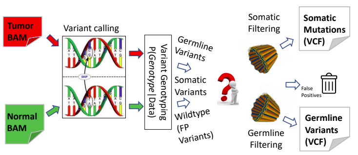
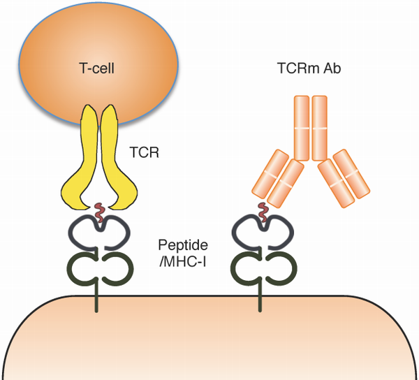
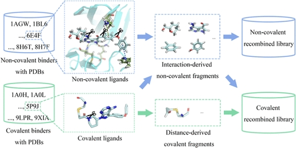
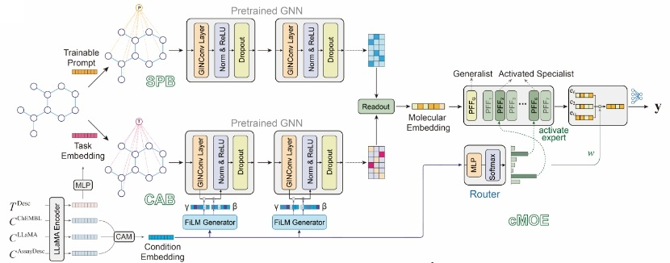

01variant calling
引入RNA信息辅助DNA-based somatic variant calling
博士研究生
目前在中国科学院杭州医学研究所和澳门大学攻读博士学位。主要研究方向为 CADD以及AI for life science，包括小分子性质预测，变异检测以及免疫原性预测相关算法开发。
个人简介
我始终保持对科研问题的好奇心和系统性思考习惯， 重视逻辑思维以及自我驱动。在学习和研究中，我倾向于从问题本质出发，追求概念清晰、论证自洽与方法上的可解释性。
专业研究之外，我也重视多元兴趣对个人视野的拓展。旅游、音乐、摄影、篮球以及电影等爱好，使我在科研之外保持对艺术表达、身体运动和生活体验的持续关注。我相信，跨学科的知识积累和丰富的生活感知，有助于形成更开放的问题意识和更具创造力的思考方式。
当前研究方向

01引入RNA信息辅助DNA-based somatic variant calling

02引入高质量结构提高序列模型能力
过往项目经历

Journal of Chemical Information and Modeling

Nature Communications（在投）
Publications
ResearchGate： https://www.researchgate.net/profile/Xiaohe-Xu-5
联系方式